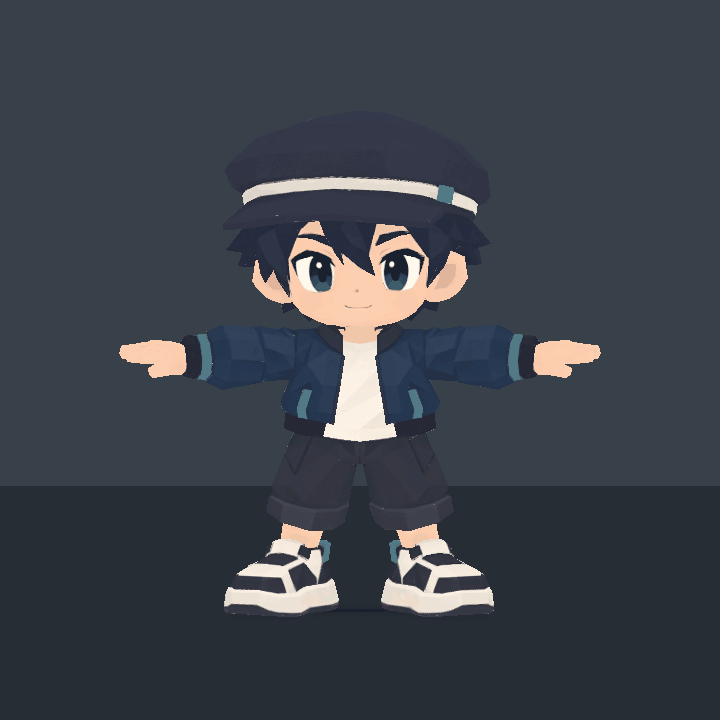
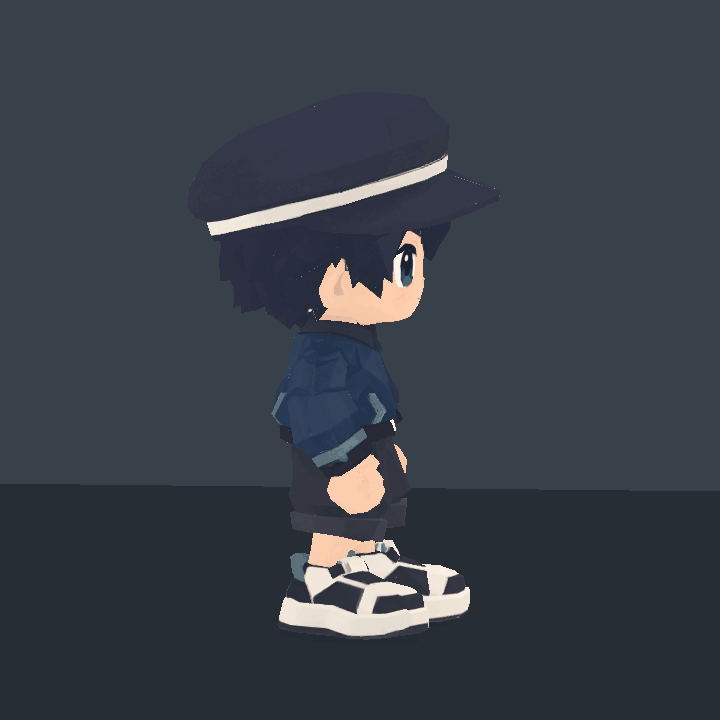
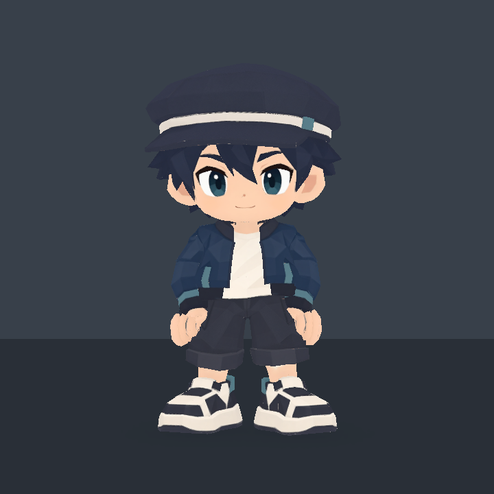
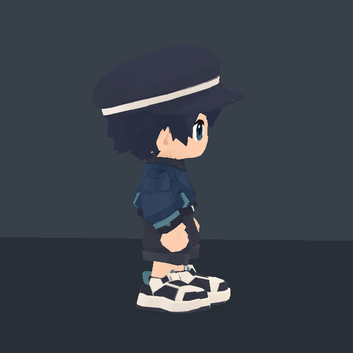
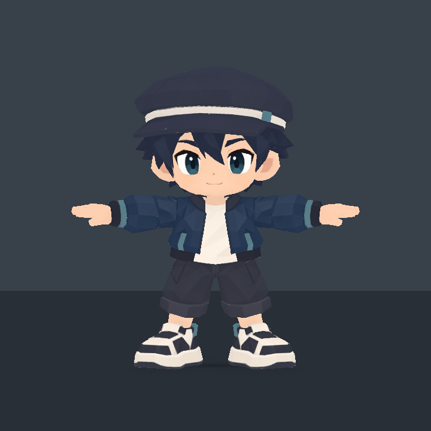
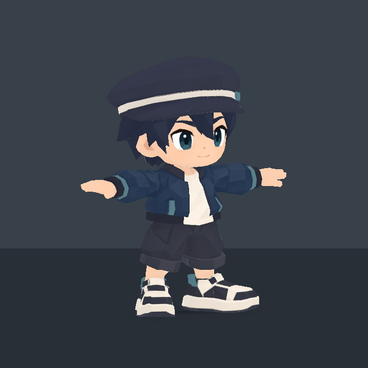
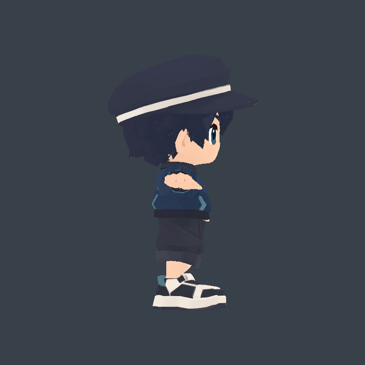
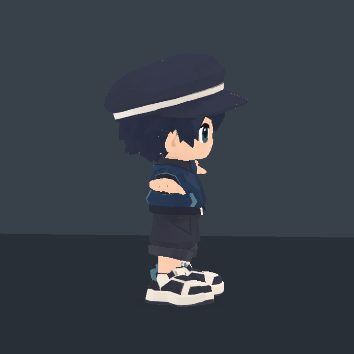
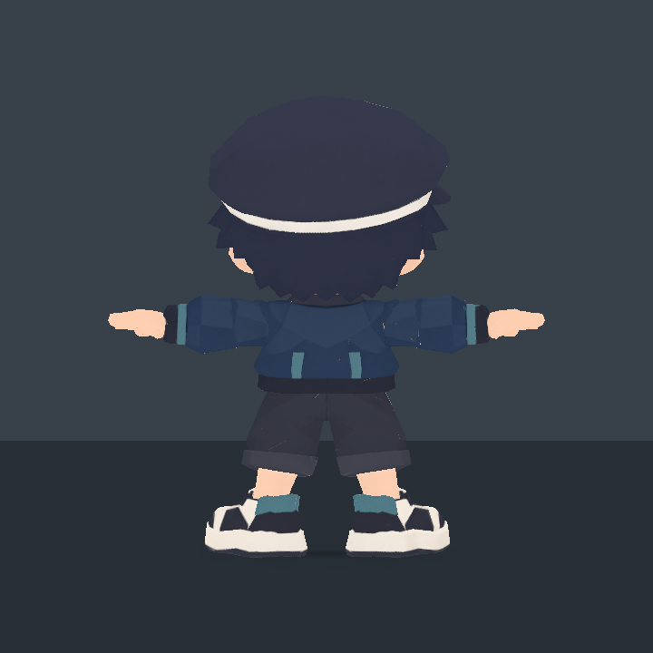
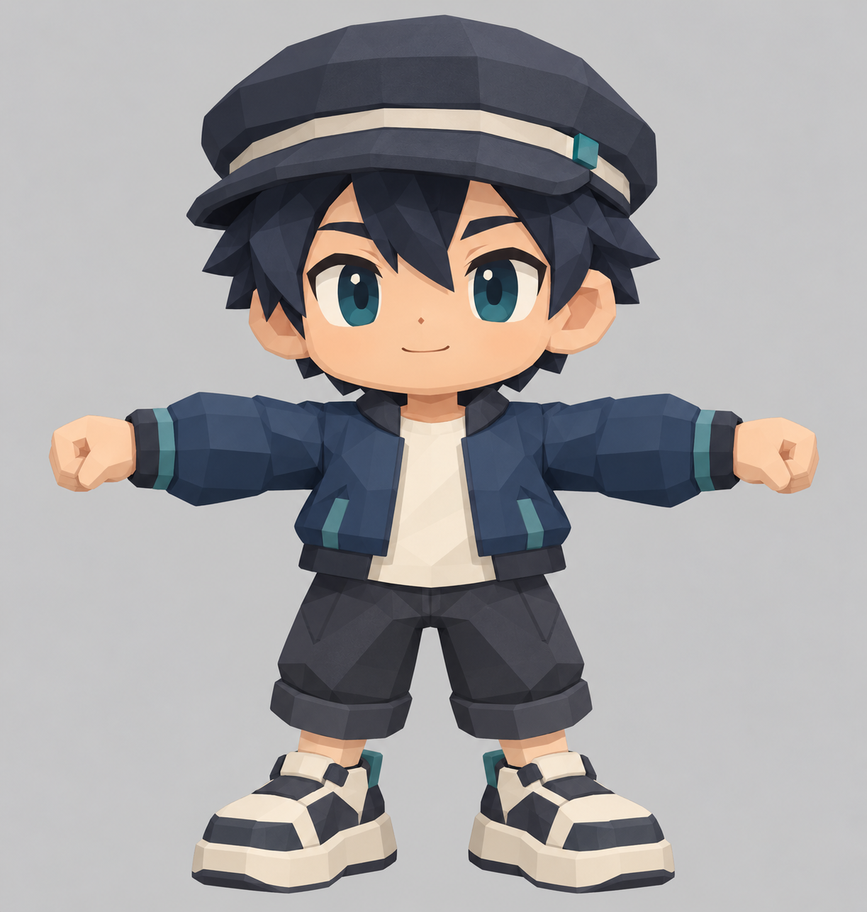

새 주인공 · Chibi Cap v006
큰 머리, 짧고 넓은 몸통과 팔다리, 넓은 모자와 큰 신발을 중심으로 만든 새 로우폴리 모델입니다.
아래는 실제 FBX를 Unity에서 렌더한 화면입니다. 턴테이블은 정적 모델의 360도 회전이며 캐릭터 액션 애니메이션이 아닙니다. 기존 플레이어·씬·모션·VFX에는 연결하지 않았습니다.
360도 모델 확인
원속도 · 30fps · 4초 반복 · 동일 카메라와 크기

탄성 액션 방향 테스트
샘플 전용 개별 클립의 실제 Unity 렌더입니다. 게임에 연결한 결과가 아닙니다.

주먹을 쥔 기본 자세

정면 · 별도 리그/주먹 메시 적용
2.5D 측면 · 기본 자세정면·측면·뒤 확인

Front

Three-quarter

Pure side view

2.5D side view

Back생성 기준 이미지
아래는 이미지 생성 단계의 기준 시안입니다. 최종 메시의 증거는 위의 Unity 렌더입니다.
